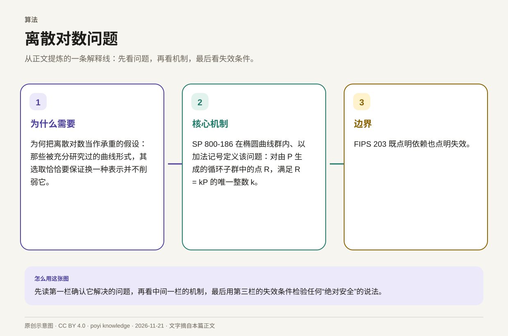
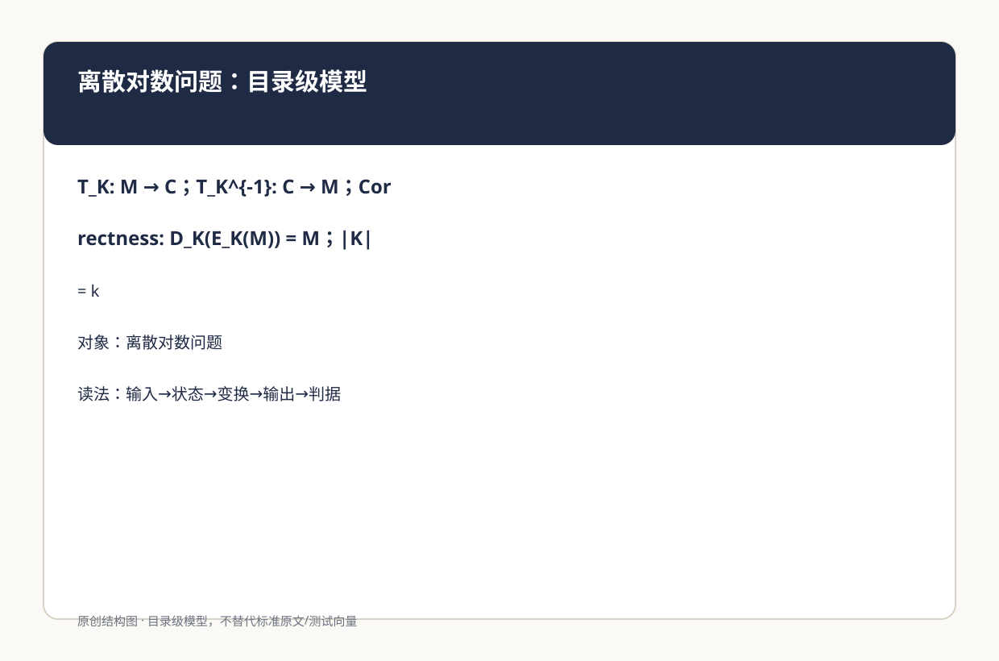

原理与机制
算法：离散对数问题（Discrete Logarithm Problem）。SP 800-186 在椭圆曲线群内、以加法记号定义该问题：对由 P 生成的循环子群中的点 R，满足 R = kP 的唯一整数 k，在 sp800-186.txt:438-439 处是 「This number is called the discrete logarithm of R to the base P.」（这个数称为 R 以 P 为底的离散对数）；任务在 439-440 处给出：「The discrete logarithm problem is the problem of finding the discrete logarithm of R to the base P for any two points P and R on the curve, if such a number exists.」（离散对数问题即：给定曲线上两点 P 与 R，求 R 以 P 为底的离散对数（若该数存在））。说明 R 属于该子群的属于记号（第 437 行）在本抽取中退化，故群的设定作转述，两句定义则整段引用（正文左对齐、以单空格接合）。加法记号是椭圆曲线情形的写法；在有限域上同一问题以乘幂形式表述，这一点由其他被引文件指明。

为什么重要
为何把离散对数当作承重的假设：那些被充分研究过的曲线形式，其选取恰恰要保证换一种表示并不削弱它。RFC 8032 就 Ed25519 曲线说明，它相对 Curve25519 的坐标变换意味着「discrete logarithm problem is the same as for Curve25519.」（离散对数问题与 Curve25519 相同）；就 Ed448 形式相对 Ed448-Goldilocks，则换基点是「which preserves difficulty of the discrete logarithm.」（保持离散对数的难度）。两段引文都取自单行原文（它们从句中起，因为句子会换行）。由此给出的设计理由是可迁移性：等价的曲线保持同样的难问题，于是对某一群上离散对数假设的信心可传到实际使用的那个群。RFC 8032 此处并不量化该难度，故该条目不声称具体的比特级强度数字。
应用与实例
离散对数问题是 NIST 密钥建立标准所依据的假设。NIST IR 8547 在 nist-ir8547-final.txt:347-348 印着 「SP 800-56A specifies key-establishment schemes based on the discrete logarithm problem over finite fields and elliptic curves, including several variations of Diffie-Hellman」（SP 800-56A 规定了基于离散对数问题的密钥建立方案——涵盖有限域与椭圆曲线上的多种 Diffie-Hellman 变体）。这段引用有意到此为止：紧随其后的 Menezes-Qu-Vanstone 名字跨连字符换行，而校验器在归一化时会把该断行无连字符地接合，所以本句只引用到干净印出的 "Diffie-Hellman"。它支持的声明很窄且标准：Diffie-Hellman 密钥建立这一族（有限域与椭圆曲线皆有）建立在离散对数问题之上。文档在 DH/MQV 族之外规定的内容不在此复述。

边界与攻击面
FIPS 203 既点明依赖也点明失效。它的背景段（fips203.txt:358）印着大规模量子计算机会使 「This would include key-establishment schemes and digital signature schemes whose security depends on the difficulty of solving the integer factorization and discrete logarithm problems (both over finite fields and elliptic curves).」（这会包括那些安全性取决于求解整数分解与离散对数问题之难度的密钥建立与数字签名方案——有限域与椭圆曲线皆是）；又在 fips203.txt:354 印着 「The key establishment schemes specified in SP 800-56A and SP 800-56B are vulnerable to attacks that use sufficiently-capable quantum computers.」（SP 800-56A 与 SP 800-56B 规定的密钥建立方案，易受使用足够强大量子计算机的攻击）。就这一份文件而言，离散对数假设正是会崩塌之处：依赖离散对数问题难度的方案，按文本所说易受足够强大的量子计算机攻击。注意措辞范围：FIPS 203 把失效归因于量子计算机，却未点名具体算法，所以该条目只沿用原文的 quantum computers 一词，不从别的文件搬来某个攻击的名称。
历史与背景
这些留存来源印出的可定年历史，讲的是针对该假设弱点的应对，而非问题本身之起源。FIPS 203 在 fips203.txt:358 记录 「in 2016, NIST initiated a public Post-Quantum Cryptography (PQC) Standardization process to select quantum-resistant public-key cryptographic algorithms.」（2016 年，NIST 启动公开的抗量子密码标准化进程，遴选抗量子的公钥算法）——给出了一个具体年份，对应于取代离散对数类方案的标准化。该文件本身的日期在 fips203.txt:13，“Published August 13, 2024”，所以该条目是一份 2024 年的文献在叙述 2016 年的进程。至于离散对数问题最初由谁、在何年提出，本行这四份留存文件都没有给出，故该条目不点名发明者、不写创始年代；只记录来源确实印出的内容，该问题更早的历史属于本目录的其他行。
逐步示例与核验
形式模型与复算步骤
[C=E_K(P;r),\qquad P=D_K(C)]
离散对数问题的公开参数、密钥/随机数与消息；变量说明：P 明文，C 密文，K 密钥，r 随机化参数。1.按算法规范编码输入。2.在密钥控制下执行轮函数。3.输出密文并检查长度与格式。边界：公式只覆盖已登记的参数与假设；参数取值、标准版本和实现细节仍以来源为准。
参考出处
- Wikipedia search entry for 离散对数问题. https://zh.wikipedia.org/w/index.php?search=%E7%A6%BB%E6%95%A3%E5%AF%B9%E6%95%B0%E9%97%AE%E9%A2%98
- Handbook of Applied Cryptography (Menezes, van Oorschot, Vanstone). https://www.cacr.math.uwaterloo.ca/hac/